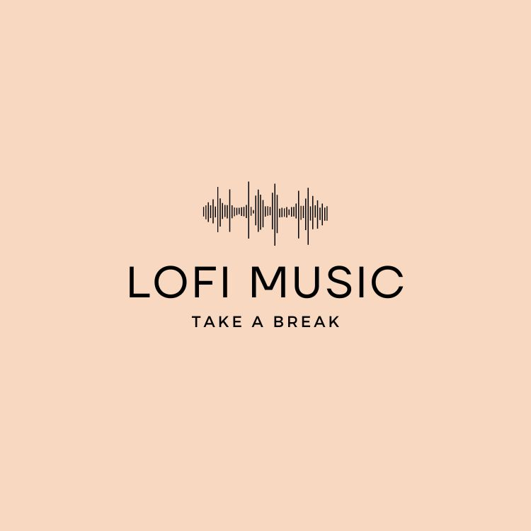

GoodBuy|Youtube Music-Lofi Chill Beats Recommendations

When it comes to Lo-fi music, people often associate it with a style of music that promotes relaxation, meditation, and focus. Lo-fi music is renowned for its unique soft and soothing rhythms. Its musical tempo is typically slow, with simple and easy-to-listen melodies, creating a relaxed and pleasant atmosphere. Lo-fi music is often used as background music, allowing people to feel calm and peaceful while working, studying, or relaxing.
This music style blends elements of jazz, funk, electronic music, and more, appreciated by fans for its rich tonality and light beats. One of the characteristics of Lo-fi music is its low fidelity sound quality, which creates a nostalgic and warm feeling, reminiscent of times gone by.
In addition to its unique musical features, Lo-fi music lyrics often reflect contemplation on life and expressions of emotion. These lyrics often carry a sense of tranquility and depth, evoking relaxation and peace.
Lo-fi music is a genre filled with a sense of relaxation and tranquility, characterized by its unique tonality and simple melodies, allowing people to find moments of peace and relaxation in their busy lives.
The Origin and History of Lo-fi Music
Lo-fi music originated in the underground music scene of the 1960s, where artists and musicians began creating music using limited recording equipment and inadequate techniques. These musical works were dubbed “Low Fidelity” or simply Lo-fi due to their unprocessed, raw sound.
The resurgence of Lo-fi music can be traced back to the increasing emphasis on relaxation and meditation in recent years. In today’s fast-paced life, people seek a way to alleviate stress and find inner peace. With its gentle melodies and light rhythms, Lo-fi music provides a relaxing atmosphere, allowing individuals to relieve stress, focus their attention, or simply enjoy moments of tranquility.
Furthermore, the diversity of Lo-fi music is also one of its appealing factors. As Lo-fi music incorporates elements from various styles such as jazz, funk, electronic music, etc., it can cater to different tastes and preferences, attracting a broader audience.
Classification of Lo-fi Music
Lo-fi music can be divided into many different subcategories, including Lo-fi Hip Hop, Lo-fi R&B, Lo-fi Pop, and more. While these subgenres may differ in musical style and elements, they all maintain the basic characteristics of Lo-fi music: relaxed, soft, and raw sound.
World-renowned Lo-fi Music Bands and Singers
-
Chillhop Music: Chillhop Music is an independent music label specializing in Lo-fi Hip Hop music. Their music is often used as relaxing background music and has garnered a large following on YouTube and streaming platforms.
-
Nujabes: Nujabes was a Japanese musician and producer known for his unique Lo-fi Hip Hop music. His music blends elements of jazz, electronic, and funk music, deeply loved by fans worldwide.
-
J Dilla: J Dilla was a legendary funk music producer whose influence on Hip Hop music is undeniable. His Lo-fi music works are known for their unique rhythms and groove, profoundly impacting contemporary music.
-
Mac Ayres: Mac Ayres is an American musician and singer known for creating relaxing Lo-fi R&B music. His music is filled with gentle melodies and a relaxing atmosphere, greatly loved by fans.
-
Tomppabeats: Tomppabeats is a Finnish music producer known for his emotional and rhythmic Lo-fi music. His music is full of warmth and soft melodies, often used as background music for relaxation and meditation.
These bands and singers enjoy a high reputation in the Lo-fi music scene, and their musical works are often used as background music for relaxation, meditation, and focus, beloved by fans worldwide.
A YouTube music channel shared previously has recently uploaded some new Lo-fi music tracks for us to enjoy. Due to YouTube music copyright reasons, the link is provided below. Please click the link to jump to YouTube and listen!


Other Music Genres
For those interested in music, you may also refer to previous articles to learn about introductions to other music genres.
Enjoy Better Music Experience
Want to enjoy a better music experience? You might want to check out the previous articles introducing speakers and headphones.